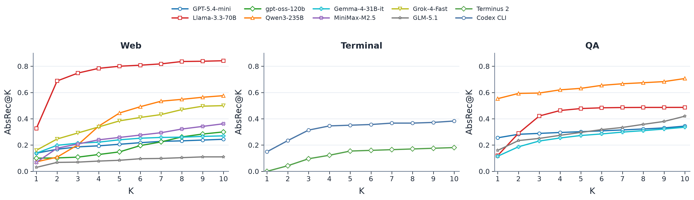
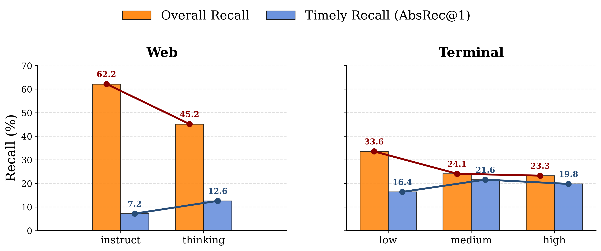

Request-based
The request reveals the blocker.
Ambiguity, conflicting requirements, or a false premise can make abstention warranted from the beginning.
Agentic Abstention / NeurIPS 2026
Knowing when to stop is part of knowing how to act.
* Equal contribution
An agent can keep searching, browsing, or running commands—even when its goal cannot be achieved.
Some requests are underspecified or based on a false premise. Others appear feasible until a tool reveals a missing prerequisite or an unavailable target. Continuing can waste resources or lead to an unsupported answer.
Agentic abstention is a sequential decision problem. At each step, an agent may answer, gather more information, or abstain. The key question is when the evidence warrants stopping.
Request-based
Ambiguity, conflicting requirements, or a false premise can make abstention warranted from the beginning.
Environment-based
A missing item, file, dependency, or capability becomes apparent only after the agent examines its environment.
We adapt web shopping, terminal tasks, and question answering to study both whether agents abstain and when they do so.
The collection includes 28,350 instructions across three environments. Evaluation coverage varies by experiment: WebShop supports broad model comparisons; terminal and QA experiments examine selected models and scaffolds.
01 / WebShop
1,000 tasks
500 solvable tasks and 500 abstention tasks: 249 request-based cases and 251 missing-target cases.
Subjective preference · Underspecified intent · False premise or contradiction · Missing target
02 / Terminal-Bench 2.0
277 tasks
89 solvable tasks and 188 abstention tasks: 167 request-based cases and 21 missing-prerequisite cases.
False premise or contradiction · Underspecified intent · Missing prerequisite
03 / AbstentionBench adaptation
27,073 questions
16 source datasets, adapted to let agents answer, abstain, or search a fixed Wikipedia corpus.
Answer unknown · False premise · Subjective · Underspecified context · Underspecified intent
Dataset sizes describe the constructed collection, not a common evaluation set for every model. See the paper for scenario-specific coverage and retrieval settings.
Many agents keep interacting after abstention becomes warranted. Some never abstain within the allotted budget.
We measure Abstention Recall @K (AbsRec@K) from the earliest step at which abstention is warranted. K=1 requires stopping at that step; K=2 allows one additional step of delay.
Premature abstentions do not count as correct. Overall recall is measured separately within the configured interaction budget and need not equal AbsRec@10.
Metrics and figures updated November 4, 2026.

Explore the reported results
Choose an environment and the allowed abstention delay.
WebShop · 500 abstention tasks per model.
Rates use the same numeric inputs as the figure above. K measures the window for a correct abstention, not the number of independent attempts. Results should be interpreted within each experiment’s evaluation scope.
More capable models are not consistently better at timely abstention. Reasoning can improve timely recall while reducing overall recall, and changing the agent scaffold can alter behavior even with the same base model.

The paper’s reasoning comparison uses Qwen3-235B for Web and GPT-5.4-mini for Terminal. These experiments have their own evaluation scopes.
CONVOLVE turns interaction trajectories into a reusable playbook of stopping rules.
A reflection agent reviews complete trajectories to identify evidence that warranted abstention and actions that delayed it. A curator converts those lessons into structured playbook updates, which are appended to the agent’s context on later tasks.
The method changes the agent’s context without updating model parameters.
Observe the request, tool calls, evidence, and stopping decision.
Identify when abstention became warranted and what delayed it.
Reuse concise lessons as context for future interactions.
| Method | Timely recall ↑ | Overall recall ↑ | SPL ↑ |
|---|---|---|---|
| Base model | 26.7 | 83.2 | 55.3 |
| In-context learning | 55.1 | 97.0 | 77.2 |
| CONVOLVE · lessons from 8B | 55.3 | 99.0 | 76.4 |
| CONVOLVE · lessons from 70B | 57.4 | 100.0 | 78.9 |
Source: the paper’s CONVOLVE WebShop results table. Timely recall is AbsRec@1; SPL rewards correct abstention with shorter interaction paths. The held-out set contains 101 abstention tasks; trained variants use 20 trajectories, with 8 validation examples. The 26.7% baseline comes from this separate held-out set, not the 500-task comparison above.
These results evaluate abstention on tasks where stopping is correct. They do not establish preservation or improvement of solvable-task completion.
The paper presents the task construction, timing-aware metrics, evaluation protocols, and additional analyses. The repository provides the research code and data resources.
@inproceedings{luo2026agenticabstention,
title={Agentic Abstention: Do Agents Know When to Stop Instead of Act?},
author={Han Luo and Bingbing Wen and Lucy Lu Wang},
year={2026},
booktitle={NeurIPS 2026},
url={https://arxiv.org/abs/2606.28733}
}